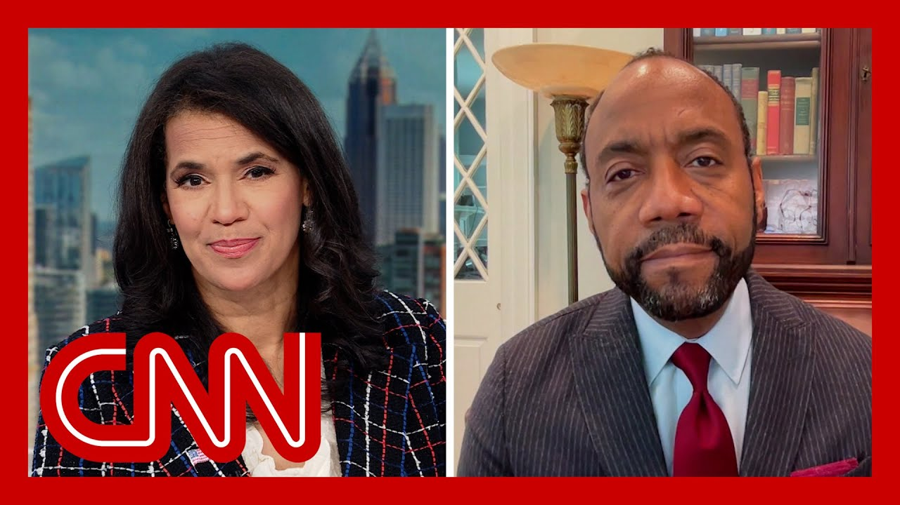

【特朗普要求哈佛大学提供外国留学生的"姓名和国籍"】
Summary: President Trump escalates attacks on Harvard, demanding details of international students after a court blocked his enrollment ban, sparking fear and retaliation amid funding cuts and legal battles.
摘要： 特朗普总统升级对哈佛大学的攻击，在法院暂停其留学生入学禁令后要求公开国际生详细信息，此举引发恐慌和报复，同时涉及资金削减和法律纠纷。

⏱️ Estimated Reading Time: 11 min
President Trump is escalating his attacks on Harvard University, just days after a federal judge temporarily halted his administration's ban on Harvard enrolling international students.
特朗普总统正在升级对哈佛大学的攻击，此前不久一名联邦法官暂时阻止了其政府禁止哈佛招收国际学生的命令。
The president is now demanding quote names and countries of the thousands of international students at the Ivy League school.
总统现在要求这所常春藤盟校提供数千名国际学生的"姓名和国籍"。
Trump suggesting that foreign countries, some of which he says are hostile to the US, should contribute funding to educate their students.
特朗普暗示，一些他称为对美国怀有敌意的国家应该为教育本国学生提供资金。
For more on this escalating feud, let's go to Julia Benbrook near Trump's New Jersey estate, where he's spending the weekend.
关于这场不断升级的争执的更多信息，让我们联系在特朗普新泽西庄园附近的朱莉娅·本布鲁克，他正在那里度周末。
Julia, tell us more about the president's sentiment here.
朱莉娅，请详细说明总统在此事上的态度。
Well, there is escalation in President Donald Trump's ongoing battle with Harvard University.
唐纳德·特朗普总统与哈佛大学持续的斗争正在升级。
Just a couple of days ago, he was working to ban international students from attending Harvard, a move that was swiftly halted by a federal judge.
就在几天前，他试图禁止国际学生进入哈佛，这一举措被联邦法官迅速叫停。
And then overnight, we're hearing from Trump again as he demands more information about the who attend writing this quote.
一夜之间，我们再次听到特朗普要求提供关于就读学生的更多信息，他写道。
Now, about 27% of Harvard's student body is of students from overseas, and they do release some of that information starting in 2024.
目前哈佛约27%的学生来自海外，校方将从2024年起公布部分此类信息。
They do have a list of which countries those students are attending from.
他们确实有一份这些学生来源国的名单。
It's important to note that, according to Harvard's website and the student aid section, it makes very clear that foreign students are not eligible for federal funding and can instead apply for scholarships and things like that through the college itself.
值得注意的是，根据哈佛官网和学生资助栏目的说明，外国学生没有资格获得联邦资助，但可以通过学校本身申请奖学金等。
Our team has spoken with multiple at Harvard, who describe the feeling right now is one of uncertainty and even pure panic as Trump works to ban their enrollment.
我们的团队与哈佛大学多名人员交谈过，他们描述当前感受是不确定性甚至纯粹恐慌，因为特朗普试图禁止他们入学。
The university also responding calling, calling this move a clear retaliation for its refusal to meet some of the government's demands on certain policies.
大学方面回应称，此举是对其拒绝满足政府某些政策要求的明确报复。
They're on campus, and this is just the latest in a long back and forth.
他们在校园里，这只是长期拉锯战的最新进展。
We're going to pull up some of those important moments and exchanges that happened over just the last several weeks now.
我们现在将回顾过去几周发生的一些重要时刻和交锋。
The administration cut 450 million in federal grants, froze more than 2 billion in research funding, moved to ban What we're talking about threatened to end the university's tax exempt status, and is using the Department of Justice to investigate diversity initiatives.
政府削减了4.5亿美元联邦拨款，冻结超20亿美元研究资金，试图实施我们讨论的禁令，威胁取消大学免税地位，并动用司法部调查多元化举措。
So, again, a lot of uncertainty for these but also uncertainty for the faculty, staff and other students as well.
因此，不仅这些人面临巨大不确定性，教职员工和其他学生也同样如此。
Fred. All right. Julia Benbrook, thanks so much are with me now to talk more about these developments.
弗雷德。好的。朱莉娅·本布鲁克，非常感谢你现在和我一起讨论这些进展。
Is Cornell William Brooks. He is the former president and CEO of the NAACP and is currently a professor at Harvard's Kennedy School.
这位是康奈尔·威廉·布鲁克斯。他曾任NAACP主席兼CEO，现任哈佛肯尼迪学院教授。
Professor, great to see you. It's good to see you as always.
教授，很高兴见到你。一如既往地高兴见到你。
So what do you think is at the heart of President Trump's obsession here?
那么你认为特朗普总统这种执念的核心是什么？
that that is a great word to describe it. It is an obsession because what we have seen over the over many weeks, many months is an ever shifting, exercise in arguments and excuses for going after Harvard, for, for no serious legal basis.
这个描述非常准确。这是一种执念，因为过去数周数月我们看到的是不断变化的论点和借口来针对哈佛，且缺乏严肃法律依据。
meaning we have a federal judge, who's issued a temporary restraining order against this ban against, nearly, 6000, nearly 7000 international students, one out of every four six out of every ten at the Kennedy School where I teach.
意味着已有联邦法官针对这项影响近6000至7000名国际学生的禁令发布临时限制令，在我任教的肯尼迪学院，每十人中就有六人是国际生。
And what we have seen is over and over again, the Trump administration, using its just its lawyers to go after Harvard's, fiscal, its budget, literally taking away, almost $3 billion after they admitted that they made a mistake.
我们反复看到特朗普政府仅用律师手段就追查哈佛财政预算，在他们承认犯错后实际撤走了近30亿美元。
I mean, that's absolutely necessary. That's just in the research kind of funding the two. Three. That's right, that's right.
我的意思是这完全没必要。这只是研究类资金的两...三...没错，没错。
So this this threat is invoking fear. I mean, students, especially international ones, you know, are terrified to go home for the summer while the back of the U.S.. But they get to finish at Harvard.
因此这种威胁正在引发恐惧。国际学生尤其害怕暑假回国后无法返美完成哈佛学业。
I mean, these are legit questions. So what are your concerns for these students, especially as you mentioned, six out of ten of the students there at the, you know, Kennedy School are
这些都是合理担忧。你对这些学生有何关切？特别是如你所说，肯尼迪学院十分之六的学生是...
Well, I'm very concerned. So I have have students who who would like to go visit their parents, right before graduation and come back with them, who are afraid that if they leave the country, they may not be able to get in.
我非常担忧。我有学生想在毕业前探望父母并带他们回来，却害怕一旦离境就无法再入境。
We have students who are afraid that they won't be able to continue their studies or start their studies, or even graduate.
有学生担心无法继续学业、开始学业甚至毕业。
This is absolutely terrifying. And let us be clear here, this band that the Trump administration is attempting, attempting to impose is a ban on students from Switzerland to Sweden, from Palestine to Israel, from Kenya to France.
这绝对令人恐惧。必须明确，特朗普政府试图实施的禁令针对从瑞士到瑞典、巴勒斯坦到以色列、肯尼亚到法国的所有学生。
and this is a band that hurts all kinds of students studying all kinds of subjects that serve the world.
这项禁令伤害了学习各类造福世界学科的所有学生。
At the Kennedy School, we have students who are from India who are studying development. We have students from Nigeria who are studying ways to improve healthcare.
肯尼迪学院有来自印度研究发展的学生，有尼日利亚研究医疗改进方法的学生。
The point being here is administration is engaging in a common war, a psychological war against students in an effort to punish a global university.
关键在于政府正在发动一场针对学生的心理战，以惩罚这所全球性大学。
largely as a result of the president literally, using Harvard as a toy, as a, as a political, if you will, to agitate and excite his base to the detriment of the country's well-being and the good of the country.
很大程度上是因为总统实际上将哈佛当作政治玩具来煽动基本盘，损害国家福祉。
Think about this, Fredricka. we have hospitals who care for sick, dying, and and and patients who are in need of health care.
想想看，弗雷德丽卡。我们有照顾病患、垂死者和需要医疗的病人的医院。
who literally create, the means by which we saw serious problems and all of that is being threatened by a president who's having a temper tantrum at the expense of the country.
他们创造了解决严重问题的方法，而这一切都受到一个拿国家利益发泄脾气的总统的威胁。
and right now, Harvard's president is standing firm that the campus will not bend to the white House on a variety of policy changes.
目前哈佛校长坚持校园不会在白宫多项政策变更前屈服。
will will Harvard be able to continue to dig in its heels and combat this white House?
哈佛能否继续坚持立场对抗白宫？
I think we have to, because, first of all, with the president and and the administration is asking Harvard to do is to violate the Constitution.
我认为必须如此，因为总统和政府要求哈佛做的是违宪行为。
There is a First Amendment in the Constitution which guarantees all persons, not merely all citizens, freedom of expression.
宪法第一修正案保障所有人——不仅是公民——的言论自由。
We cannot give in to that. We certainly cannot give in to lessening our mission, diminishing the quality of our work, and the quality of our study and scholarship and research and practice, so that we can essentially, appease this president.
我们不能屈服。绝不能为了安抚这位总统而妥协我们的使命，降低工作质量及研究实践水平。
So it's not so much a matter of Harvard digging in its heels. It's a matter of Harvard standing firm.
因此这不只是哈佛坚持立场的问题，而是坚守原则的问题。
And this president, literally, engaging in the temptation of the country. So we have no other choice.
这位总统实际上正在危害国家。我们别无选择。
do you feel pretty certain that it's Harvard now and another university, private or public? Next?
你是否确信下一个目标可能是其他公立或私立大学？
Oh, most certainly. Most certainly. And all we need to do is listen to the president himself.
毫无疑问。只需听听总统本人怎么说。
The president has said that we're looking at other universities and so the point being is we have to ask ourselves if Harvard, with the resources it has, is trying this hard at this expense.
总统说过正在关注其他大学，问题在于：若资源雄厚的哈佛都需如此艰难应对，那么...
What about community colleges? What about state universities? You know, I went to a state, a HBCU, a c college. I went to a private university and Ivy League law school, and I went to Head Start, and we had this president literally going after all kinds of institutions of higher learning and secondary learning in this country.
社区学院呢？州立大学呢？我曾就读州立HBCU院校、私立大学和常春藤法学院，也参与过启蒙计划，而这位总统实际上在追查国内各类大中小学教育机构。
So the issue is it's not this is not a matter of of Harvard. This is a matter of education.
因此问题不在于哈佛，而在于教育本身。
And when it comes to education, that means the well-being of most Americans, nearly all Americans. So this is critically important.
教育关乎绝大多数美国人的福祉，这至关重要。
Harvard professor Cornell William Brooks, always great to see you. Thank you so much. Good to see you. Thank you.
哈佛教授康奈尔·威廉·布鲁克斯，总是很高兴见到你。非常感谢。见到你很好。谢谢。